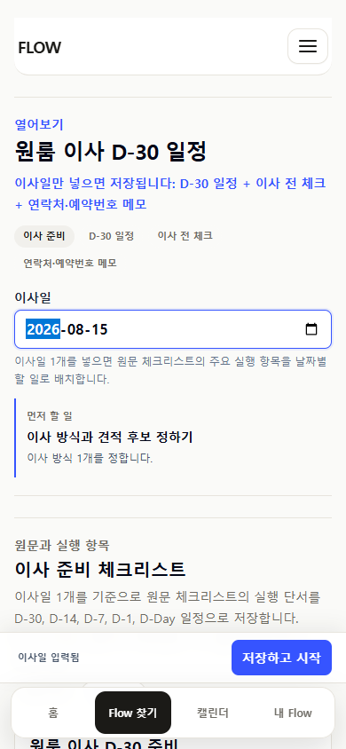
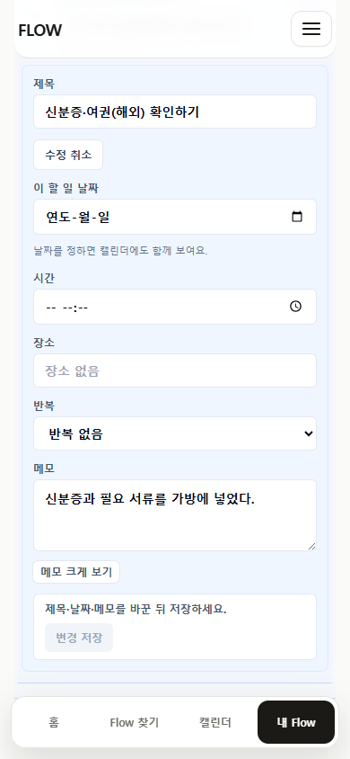
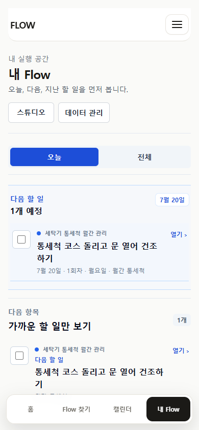
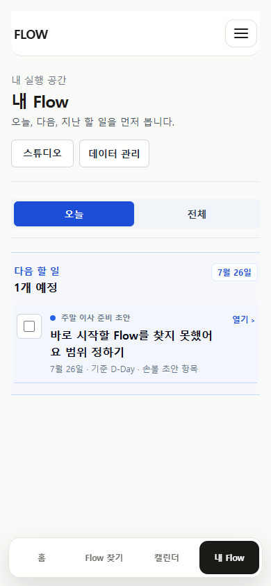
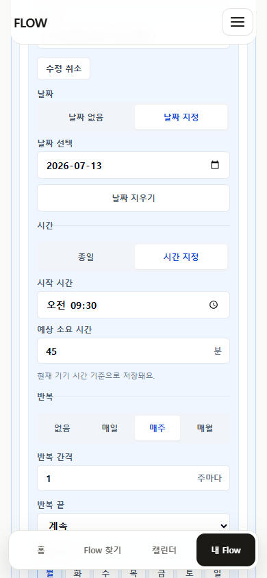
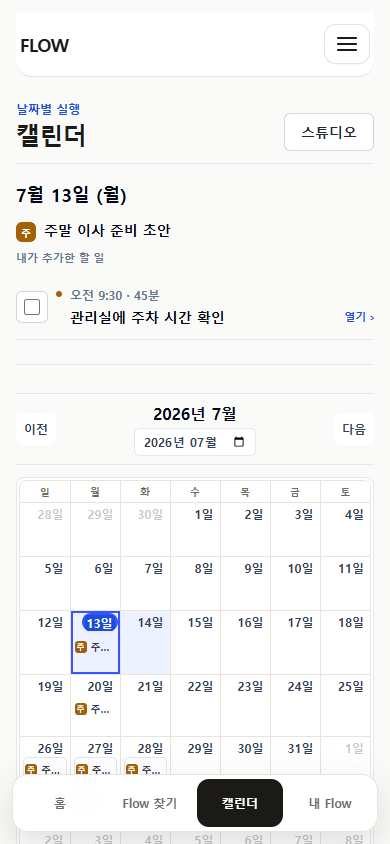
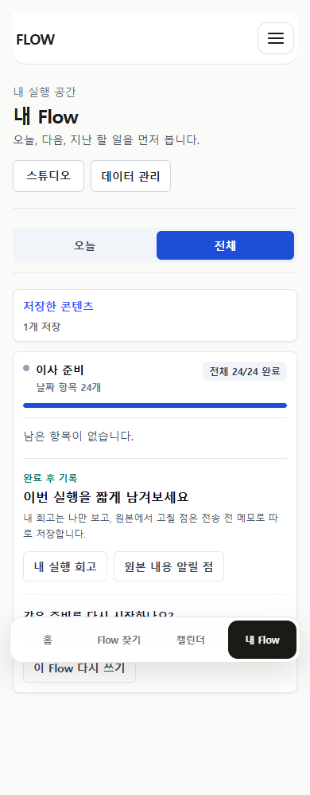

KST 오전 기본 날짜가 전날
07:12 KST에 날짜 지정 기본값이 2026-07-13으로 설정됐다. UTC `toISOString()` 날짜가 Today와 Calendar 초기값에 사용된다.
FlowMe P24-00A · Codex independent journey simulation
깨끗한 69768a1 기준선에서 476 unit, 259 E2E, production build를 통과시킨 뒤 5개 페르소나를 모바일·와이드 브라우저로 직접 재현했다.
P24-00B 사용자 관찰을 바로 시작하지 않는다. 한국 시간 기본 날짜, 반복 Today 중복, URL miss 필수 입력을 먼저 수정한다. Vercel 관찰 링크도 익명 접근이 가능해야 한다.
완료, 회고, 원본 수정 메모, 새 run 재사용은 실제 상태 저장까지 연결됐다. 자동 테스트 통과와 사용자 여정 품질은 별도 판정으로 유지한다.
07:12 KST에 날짜 지정 기본값이 2026-07-13으로 설정됐다. UTC `toISOString()` 날짜가 Today와 Calendar 초기값에 사용된다.
Vercel deployment는 READY지만 익명 요청은 302 SSO redirect다. 외부 사용자 세션 링크로 쓸 수 없다.
동일 세탁조 청소 occurrence가 `다음 할 일`과 `다음 항목`에 각각 checkbox와 함께 나타난다.
필수 입력이 모두 비어도 draft가 만들어지고 fallback 상태 문장이 실행 항목 제목으로 남는다.
Next와 Playwright를 포함한 clean baseline audit 결과다. dirty package 변경을 해결로 간주하지 않는다.
기능은 있지만 기준일, 날짜 추가, 완료 취소가 상세 안쪽에 있어 설명 없이 찾기 어렵다.
| 페르소나 | 성공한 핵심 행동 | 남은 마찰 | 판정 |
|---|---|---|---|
| 기준일 역산형 이사 | 이사일 설정·재수정, D-30 재계산, Calendar | 재수정入口 3 actions, 상세 완료 checkbox 중복 | partial |
| 날짜 없는 체크리스트 | preview→완료 경계, 날짜 추가, Calendar 반영 | 날짜 추가入口가 상세 안쪽 | |
| 반복 루틴 | 회차 완료, 다음 회차, 완료 취소 | 동일 할 일 Today 중복 | partial |
| URL miss 개인 초안 | 구조·일정·시간·반복 수정, Calendar occurrence | 빈 입력 허용, KST 날짜 오류, 긴 편집 밀도 | partial |
| 공개 Flow 완료·재사용 | 완료, 회고, 미전송 수정 메모, 새 run | 완료 상태는 fixture 기반 검증 | supported |







local date, 반복 Today 단일 표현, miss draft validation을 각각 작은 fix slice로 닫는다.
공개 관찰 preview와 dependency-only 업그레이드를 준비하고 독립 QA를 통과한다.
5명 이상이 첫 방문·수정 실행·재방문을 각각 수행하고 발화와 실패 depth를 수집한다.
P24-00C에서 keep/change/defer를 결정하고 UX 개선 범위를 관찰 근거에 묶는다.
personal overlay와 원본 업데이트를 보존하는 pure three-way contract를 먼저 만든다.
계정·다른 기기 복원, 데이터 migration, 보안 Gate를 닫은 뒤 production을 판단한다.
이번 결과는 Codex가 수행한 브라우저 시뮬레이션과 자동화다. 실제 사용자가 설명 없이 기능을 발견하고 의미를 이해했다는 증거는 아직 없다. 완료 Flow는 fixture로 준비했으며, 24개 항목을 사람이 실제로 완주한 세션으로 표현하지 않는다.
{kind=link}
{kind=link}
{kind=link}
{kind=link}
{kind=link}
{kind=link}
{kind=link}
{kind=link}